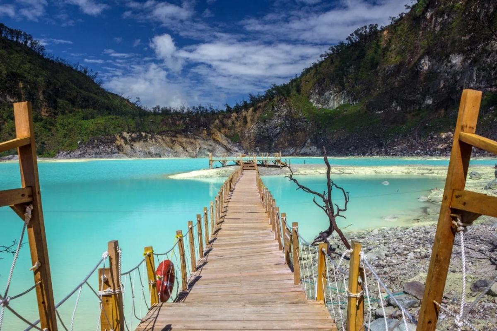
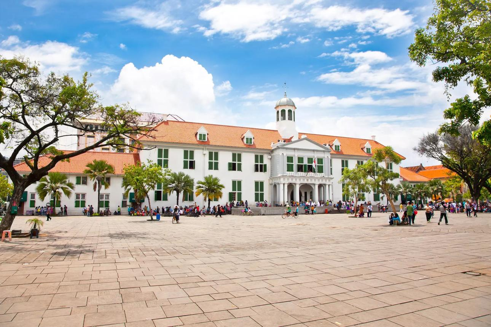
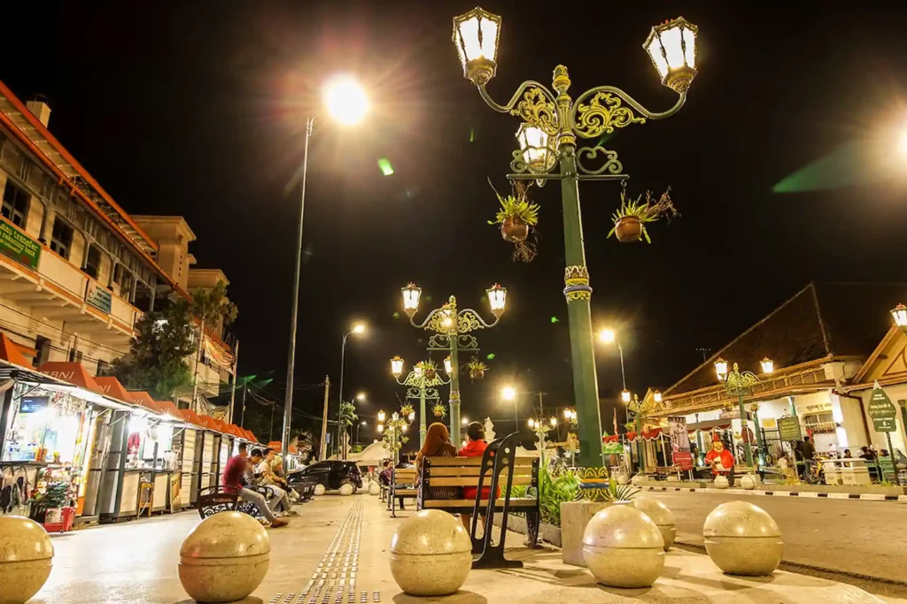

Pengalaman Perjalanan Saya
Indonesia memiliki banyak tempat wisata yang menarik untuk dikunjungi. Setiap tempat mempunyai keunikan, keindahan, dan cerita tersendiri. Berikut adalah tiga destinasi wisata favorit yang menjadi inspirasi perjalanan saya.
1. Wisata Alam - Kawah Putih

Kawah Putih merupakan salah satu destinasi wisata alam yang terkenal di Ciwidey, Bandung, Jawa Barat. Tempat ini memiliki danau kawah dengan warna air yang dapat berubah serta pemandangan pegunungan yang indah.
Data Singkat Wisata
- Nama: Kawah Putih
- Lokasi: Ciwidey, Bandung, Jawa Barat
- Tahun Kunjungan: 2024 (contoh)
- Fasilitas: Area parkir, toilet, shuttle, warung makan, dan spot foto.
2. Wisata Sejarah - Kota Tua Jakarta

Kota Tua Jakarta merupakan kawasan bersejarah yang menyimpan banyak peninggalan bangunan kolonial. Kawasan ini cocok untuk mengenal sejarah Jakarta sekaligus menikmati suasana bangunan klasik yang masih terawat.
Data Singkat Wisata
- Nama: Kota Tua Jakarta
- Lokasi: Taman Fatahillah, Jakarta Barat
- Tahun Kunjungan: 2025 (contoh)
- Fasilitas: Museum, area pedestrian, toilet, tempat duduk, dan tempat kuliner.
3. Wisata Kuliner - Malioboro

Malioboro merupakan salah satu kawasan wisata populer di Yogyakarta. Selain terkenal dengan suasana kotanya, tempat ini juga menawarkan berbagai makanan khas seperti gudeg, bakpia, dan jajanan tradisional lainnya.
Data Singkat Wisata
- Nama: Malioboro
- Lokasi: Kota Yogyakarta, DIY
- Tahun Kunjungan: 2026 (contoh)
- Fasilitas: Area pedestrian, tempat makan, pusat oleh-oleh, toilet, dan tempat duduk.
Kesimpulan
Dari ketiga destinasi tersebut, saya belajar bahwa perjalanan bukan hanya tentang mengunjungi tempat baru, tetapi juga mendapatkan pengalaman, mengenal budaya, dan menikmati keindahan Indonesia.